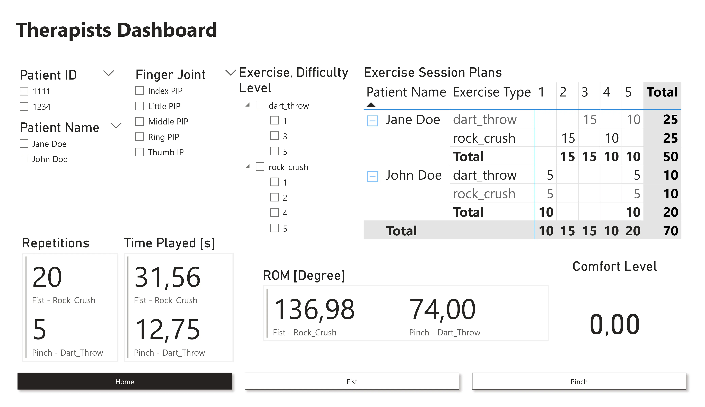
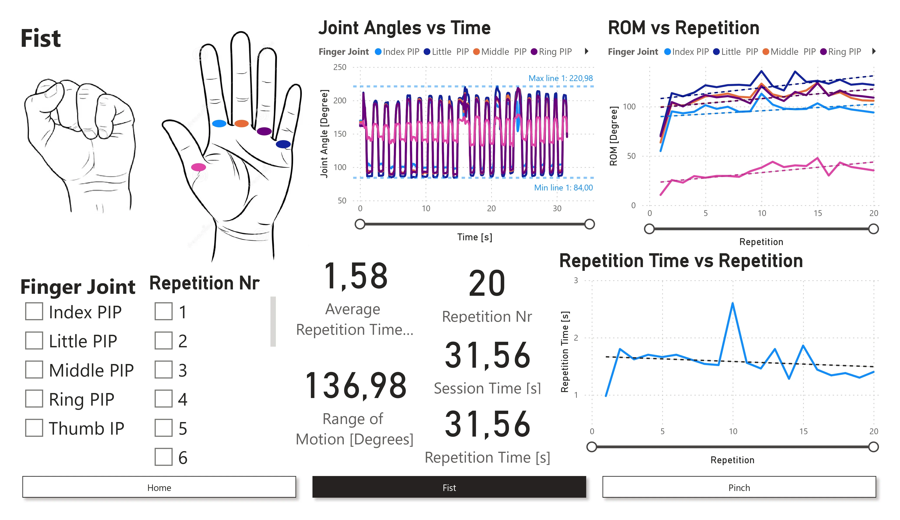
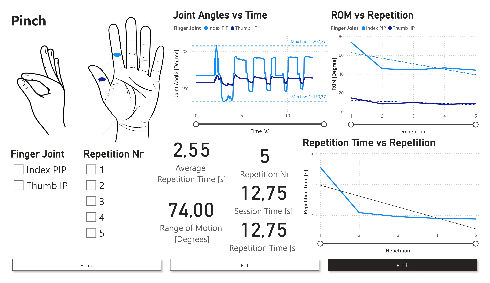

User Flow
Define the screens needed during a game session.
Master Project, October 2022 - February 2023
A Virtual Reality MiniGame system along with a dynamic Therapists dashboard was designed.
A user flow was done to generate the screens required during the game session.
A rough sketch of the screens were designed in Figma and then given to other team members to implement in the Game.
UX - User Flow and Wireframe on Figma.
Therapists Dashboard - process and transform the logged JSON file, investigate and generate KPIs, visualise KPIs with graphs, and design and implement the dashboard with dynamic filters and calculations.
User Study Design - research, design and setup.
Evaluation of initial user study.
The work connected the VR game experience with the therapist-facing analysis workflow. The game session generated logged JSON data, which then needed to be organised, transformed, filtered, calculated, and visualised for non-specialised personnel.
Define the screens needed during a game session.
Sketch rough Figma screens for implementation by the team.
Use generated JSON session data as the dashboard input.
Show range of motion, session time, repetitions, and repetition timing.
Run user studies and collect questionnaire-based feedback.
The original page included two embedded Figma files: one whiteboard for the project flow and one design file for the screen work.
For testing our game, we performed two user studies: one during the expo day of the Human-Centered Computing and Extended Reality Lab with the Leap Motion device only, and a second one within the lab room at Medical Valley Center with the tracking device and VR headset as well.
For both studies, participants tried out the game and then described their experience and overall satisfaction through a questionnaire.
The questionnaire included participant information, declaration of consent, demographics information, and Likert scale questions related to both the dart and stone minigame. These were the main focus of the study and were later used to calculate a System Usability Score (SUS). Original questions and scoring system are defined in Brooke 1995.
The questionnaire also included three additional questions for both minigames to check major advantages and disadvantages of the system, as well as the overall impression of the game's usefulness in therapy.
A few questions covered the overall experience with the game and were used for feedback on overall enjoyment of the system.
Virtual embodiment related questions were included to get a first glimpse at the user's experience with the game in a VR setting. A full questionnaire on virtual embodiment can be conducted in future iterations of this project. Questions were adapted from Roth and Latoschik 2020.
A simple questionnaire was also prepared for assessing the dashboard with medical professionals, with questions on ease of use and relevance of the information shown.
While the second user study involved fewer participants than the first, 8 instead of 13, it provided a more in-depth understanding of how users felt about the game. The first reason was that we calculated the Likert score of the questions and looked at both overall results and results obtained per individual question.
In addition, we conducted a Think Aloud Study to get more insight into participants' impressions and experience with the system. While some team members guided users through the technical steps required to set up the game, such as calibration, others wrote down verbalized reactions and took notes on technical issues experienced during playtime.
There were some incidents where motion tracking stopped working for a few seconds and required the mini-game to be restarted. The issues were solved immediately and the study could be resumed. Regarding the VR headset, none of the participants reported any issues or serious discomforts.
The data generated from playing through sessions logged in is visualised using Power BI for the therapist.
The JSON file generated during the game is fed into Power BI. Data first needs to be organised to easily plot and filter in the visuals.
The visuals are then designed in the report view. Starting with a paper sketch of the concept, the final visuals are made using simple components like line charts, slicers, and cards.
Power BI requires no further configuration and can be easily used by non-specialised personnel.
Therapists Dashboard: data generated during the game was analyzed and presented in Power BI for the therapist. The key elements necessary for the therapist were first conceptualised and then implemented.
The therapist is first presented with a Home screen which consists of the patient list and planned exercise sessions, along with some key overall data.
There are then separate screens for different exercises with more detailed data.
Some key performance indicators (KPIs) generated during the rehabilitation game and shown to the therapist are ROM (Range of Motion), Session Time, Number of Repetitions, Repetition Time, and Average Time for a Repetition.
ROM is the difference between the maximum and minimum angle possible by the joint. This visual is dynamic and changes either on overall data or by selecting filters of the finger joint or repetition number. ROM and joint angles are metrics used also in other works, including Lee et al. 2018 and Haghighi Osgouei et al. 2020.
Session Time shows the overall duration of the entire exercise session. Number of Repetitions shows the total number of repetitions performed by the patient during the session. Repetition Time shows the duration of a single repetition when using the repetition number filter. Average Time for a Repetition is calculated as Session Time divided by Number of Repetitions.
The KPI graphs include Joint Angles vs Time, ROM vs Repetition, and Repetition Time vs Repetition.
Joint Angles vs Time helps visualise the change in joint angles and time in consecutive repetitions. The visual contains a minimum and maximum angle line and value label.
ROM vs Repetition helps visualise the change in ROM over consecutive repetitions. Ideally, the patient's ROM should increase over repetitions or sessions, and this can be seen in the trend line.
Repetition Time vs Repetition shows the duration of a single repetition, an important factor in patient recovery. Ideally, this graph should decrease over repetitions as the patient becomes able to perform the movement faster. This can be seen in the trend line.



The project produced a VR rehabilitation game concept paired with a therapist dashboard that turns session logs into practical rehabilitation indicators. The studies gave the team early feedback on usability, comfort, and therapy usefulness.
If you like what you see and want to work together, get in touch!
prathikp.prasad@gmail.com